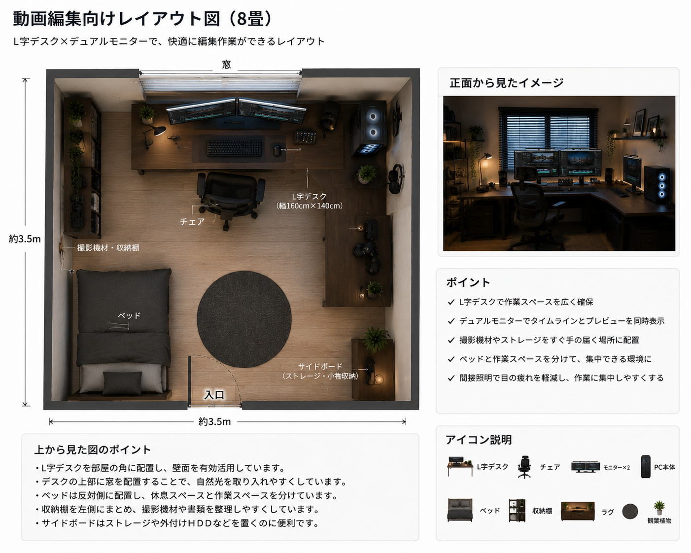

動画編集向けレイアウト

概要
動画編集や画像編集などのクリエイティブ作業に特化したレイアウトです。L字デスクとデュアルモニターを採用し、編集ソフトのタイムラインやプレビュー画面を広く表示できるため、作業効率が向上します。また、撮影機材や周辺機器を整理しやすい収納スペースも確保しています。
基本情報
| 部屋サイズ | 8畳 |
|---|---|
| 用途 | 動画編集・画像編集・配信・デザイン制作 |
| 予算 | 約250,000円～400,000円（PC本体除く） |
| デスクサイズ | L字デスク（160cm × 140cm） |
| 再現難易度 | ★★★★☆ |
レイアウト図

必要なもの
- L字デスク
- オフィスチェア
- 高性能デスクトップPC
- スピーカー
- 27インチモニター ×2
おすすめポイント
- デュアルモニターで作業効率が高い
- ゲームや配信にも対応できる
- 長時間作業でも快適
初心者向けアドバイス
最初からすべての機材をそろえる必要はありません。まずは高性能PC・27インチモニター・広めのデスクを用意し、編集作業に慣れてから2台目のモニターやマイク、カメラなどを追加すると、予算を抑えながら環境を充実させられます。